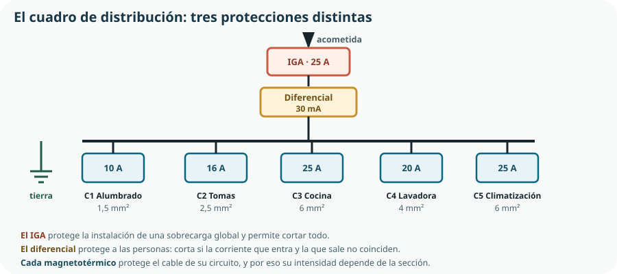

Este tema aplica todo el Bloque D a la instalación que tienes en casa, y es probablemente el más inmediatamente útil del curso: al terminarlo sabrás por qué salta un automático, qué protege cada elemento de tu cuadro, si tu potencia contratada es la adecuada y cuánto cuesta cada cosa que enchufas. Y hace lo mismo con el agua, que es la instalación de la que casi nadie sabe nada hasta que hay una fuga.
- describir la cadena desde la acometida hasta el cuadro de la vivienda;
- identificar los elementos de un cuadro de distribución y su función;
- explicar qué protege el IGA, qué el diferencial y qué cada magnetotérmico;
- relacionar la intensidad de un magnetotérmico con la sección del cable de su circuito;
- interpretar un esquema unifilar de un circuito de fuerza y de otro de iluminación;
- calcular la potencia contratada necesaria y valorar si conviene cambiarla;
- leer una factura eléctrica y distinguir sus términos;
- describir la instalación de agua de una vivienda y los tipos de válvula;
- evaluar medidas de ahorro de agua con datos y explicar qué son las aguas grises.
1. Del contador a la vivienda
Los suministros domésticos llegan a la vivienda por una cadena de elementos que la normativa fija con precisión. Conviene conocerla porque delimita de quién es cada parte, y por tanto quién paga cada avería.
La derivación desde la red de distribución hasta el edificio. Es de la compañía distribuidora.
Aloja los fusibles generales del edificio, en la fachada o en el portal. Frontera entre la red y la instalación del inmueble.
Lleva la energía hasta la centralización de contadores.
Mide la energía consumida. Es el punto donde empieza lo que paga el usuario, y hoy es telegestionado: informa a distancia hora a hora.
El cable que va del contador al cuadro de la vivienda.
El cuadro de la vivienda. Desde aquí todo es responsabilidad del propietario.
2. El cuadro de distribución

3. Las tres protecciones, y qué protege cada una
| Elemento | Protege a… | De… | Cómo actúa |
|---|---|---|---|
| IGA · interruptor general automático | La instalación completa | Sobrecarga global y cortocircuito | Corta todo. Es además el mando general para trabajar sin tensión. |
| Diferencial | Las personas | Contacto con una parte en tensión y derivaciones a tierra | Compara la corriente que entra con la que sale; si difieren en más de 30 mA, corta. |
| Magnetotérmico | El cable de su circuito | Sobrecarga y cortocircuito de ese circuito | Dos mecanismos: uno térmico, lento, para sobrecargas; uno magnético, instantáneo, para cortocircuitos. |
| Toma de tierra | Las personas, junto al diferencial | Que una masa metálica quede en tensión | Deriva la corriente de fallo al terreno, y así el diferencial la detecta y corta. |
30 mA la sensibilidad del diferencial doméstico: por debajo del umbral de fibrilación cardíaca
4. Circuitos independientes y esquemas
Una vivienda no lleva un solo circuito: la normativa exige varios circuitos independientes, cada uno con su magnetotérmico. La razón es doble: que una avería en la cocina no deje la casa a oscuras, y que cada cable lleve solo la carga para la que está dimensionado.
| Circuito | Automático | Sección | Qué alimenta |
|---|---|---|---|
| C1 · Alumbrado | 10 A | 1,5 mm² | Puntos de luz. |
| C2 · Tomas de uso general | 16 A | 2,5 mm² | Enchufes de habitaciones y salón. |
| C3 · Cocina y horno | 25 A | 6 mm² | Los dos aparatos de mayor potencia. |
| C4 · Lavadora, lavavajillas y termo | 20 A | 4 mm² | Aparatos con resistencia calefactora. |
| C5 · Tomas de baños y cocina | 16 A | 2,5 mm² | Enchufes en locales húmedos. |
| C6 y siguientes | Según uso | Según carga | Climatización, vehículo eléctrico, domótica. |
El esquema unifilar
Un esquema unifilar representa la instalación con una sola línea por circuito, aunque lleve varios conductores. Es la forma habitual de documentar una vivienda, y aplica la simbología del Tema 3.
Circuito de fuerza
Una toma de corriente lleva tres conductores: fase, neutro y tierra. El esquema muestra el automático, el recorrido y los puntos de toma, con la sección anotada.
Circuito de iluminación
Lo interesante es el mando: un interruptor simple, un conmutador para encender desde dos puntos, o un cruzamiento para hacerlo desde tres. Aquí la lógica de la instalación se parece a la del Tema 6 de electrónica digital de 2.º.
5. Potencia contratada
La potencia contratada es el máximo que se puede consumir a la vez. Se paga todos los meses, se consuma o no, y es una de las decisiones con mejor relación entre esfuerzo y ahorro que existe en una vivienda.
Psimultánea = Σ (Paparato · factor de uso) no todo se enciende a la vez, y ahí está el cálculo
| Aparato | Potencia | ¿Coincide con los demás? |
|---|---|---|
| Horno | 2 200 W | A veces, a mediodía. |
| Vitrocerámica (dos zonas) | 3 000 W | Sí, junto al horno. |
| Microondas | 1 200 W | Posible. |
| Lavadora en calentamiento | 2 000 W | Se puede evitar. |
| Lavavajillas | 1 800 W | Se puede evitar. |
| Nevera | 150 W | Siempre. |
| Iluminación LED de toda la casa | 80 W | Siempre. |
| Ordenadores, televisor y otros | 300 W | Casi siempre. |
| Suma de todo | 10 730 W | Nunca ocurre en la práctica. |
| Peor caso realista | ≈ 6 900 W | Cocina completa más lo permanente. |
6. Leer la factura eléctrica
El criterio 6.2 es comprobable sobre un documento real, y este es el ejercicio que lo convierte en algo tangible. Una factura tiene cuatro bloques, y solo uno depende de lo que se consume.
| Concepto | Cálculo | Importe | Depende de… |
|---|---|---|---|
| Término de potencia | 5,75 kW × 30 días × 0,08 €/kW·día | 13,80 € | Lo contratado, no lo consumido. |
| Término de energía | 250 kWh × 0,14 €/kWh | 35,00 € | El consumo real. |
| Alquiler del contador | 30 días × 0,027 €/día | 0,81 € | Nada. |
| Impuesto eléctrico | 5,1 % de lo anterior | 2,53 € | La suma anterior. |
| IVA | 21 % del total | 11,00 € | La suma anterior. |
| Total | — | 63,14 € | — |
7. La instalación de agua
La instalación de abastecimiento de agua es más simple que la eléctrica y se conoce mucho peor. Su esquema de distribución sigue siempre la misma lógica.
La entrada desde la red municipal y la llave que hay que saber localizar: es lo primero que se cierra ante una fuga.
Mide el consumo en metros cúbicos y protege la instalación de partículas.
Limita la presión de entrada. Una presión excesiva estropea grifos y electrodomésticos y multiplica el caudal desperdiciado.
Ramales hacia cada punto de consumo, con llave de corte por local húmedo.
Caldera, termo o bomba de calor, con su propia red de distribución en paralelo.
Grifos, duchas, cisternas y electrodomésticos, cada uno con su llave de escuadra.
Desagües, sifones y bajantes, que es el saneamiento de la sección 9.
| Válvula | Cómo funciona | Se usa para |
|---|---|---|
| De esfera o de bola | Una esfera perforada gira un cuarto de vuelta. | Cortar. Abre y cierra rápido, y no sirve para regular. |
| De asiento o de compuerta | Un obturador se acerca progresivamente al asiento. | Regular el caudal; es la de los grifos antiguos. |
| Monomando de cartucho | Dos discos cerámicos que giran uno sobre otro. | Grifería moderna: regula caudal y temperatura a la vez. |
| Antirretorno | Permite el paso en un solo sentido. | Evitar que el agua vuelva y contamine la red. Es el diodo del Tema 11. |
| Reductora de presión | Mantiene la presión de salida constante. | Proteger la instalación y limitar el consumo. |
| Electroválvula | Un solenoide abre o cierra el paso. | Automatizar: es la del KR-1, y del Tema 8. |
| Termostática | Mantiene la temperatura de mezcla constante. | Duchas: evita quemaduras y ahorra el agua que se tira ajustando. |
8. Ahorrar agua: los dispositivos que el currículo nombra
El texto oficial enumera aireadores, grifos inteligentes y recirculadores. Conviene verlos con números, porque sus efectos son muy distintos.
| Medida | Cómo actúa | Ahorro aproximado | Coste |
|---|---|---|---|
| Aireador o perlizador | Mezcla aire con el agua: el chorro parece igual con la mitad de caudal. | 40–50 % en ese grifo | 3–8 € por grifo |
| Cabezal de ducha eficiente | De 15 L/min a 8 L/min sin perder sensación. | Hasta 45 % de la ducha | 15–40 € |
| Cisterna de doble descarga | Dos volúmenes, 3 o 6 litros. | Unos 20 L por persona y día | 20–60 € |
| Grifo termostático | Alcanza la temperatura pedida sin tantear. | Elimina el agua tirada al ajustar | 80–150 € |
| Grifo inteligente | Sensor de presencia o temporizado. | Alto en uso público; discutible en vivienda | 60–200 € |
| Recirculador de agua caliente | Mantiene el agua caliente cerca del grifo, o la devuelve al depósito. | Hasta 10 000 L al año por vivienda | 100–300 €, y consume algo de energía |
| Reparar una fuga de cisterna | — | Hasta 30 L al día: más que casi todo lo anterior | Unos pocos euros |
9. Saneamiento y reutilización de aguas
El agua que entra tiene que salir. La red de evacuación es menos visible y da la mayoría de los problemas de una vivienda.
Sifón
Un codo que retiene agua y forma un tapón hidráulico: impide que los gases de la red suban al interior. Si un desagüe huele, casi siempre es un sifón que se ha secado.
Bajante
La tubería vertical que recoge los desagües de todas las plantas.
Ventilación
La bajante se prolonga hasta la cubierta para que el aire entre y salga. Sin ella, un desagüe succiona el sifón de otro y aparecen olores.
Arqueta y acometida
Punto de registro antes de la red municipal, para inspección y desatascos.
Aguas grises y aguas pluviales
Aguas grises
Las de duchas, bañeras y lavabos: sucias pero sin materia fecal. Con un filtrado y una desinfección sencillos sirven para cisternas y riego, que no exigen agua potable.
Aguas pluviales
Las de lluvia recogidas de la cubierta. Muy limpias tras descartar el primer agua de lavado del tejado, y adecuadas para riego y limpieza exterior.
Comprueba lo que has aprendido
Este tema se demuestra sobre una instalación y una factura reales, no sobre un ejemplo de libro.
| Aspecto | Qué debes demostrar | Evidencias posibles |
|---|---|---|
| El cuadro | Que identificas cada protección y sabes qué protege. | Esquema del cuadro de tu casa o del aula con sus intensidades, y explicación de qué salta en tres supuestos. |
| Sección y protección | Que relacionas la sección del cable con la intensidad del automático. | Cálculo de la sección de un circuito y del automático que le corresponde; explicación de por qué no se puede subir. |
| Esquemas | Que interpretas y dibujas un unifilar de fuerza y otro de iluminación. | Esquema de un circuito de tomas y de un punto de luz conmutado, con simbología normalizada. |
| Potencia y factura | Que calculas la potencia simultánea y desglosas una factura real. | Tabla de aparatos con su coincidencia, potencia recomendada y desglose de una factura con los cinco términos. |
| Agua | Que describes la instalación, eliges la válvula adecuada y evalúas medidas de ahorro. | Esquema de la instalación de un baño, tabla de válvulas por función y tres medidas comparadas por litros ahorrados y coste. |
| Reutilización | Que distingues aguas grises de pluviales y respetas las reglas de separación. | Propuesta de reutilización para el riego del centro con la separación de redes y la señalización previstas. |
Ejercicio con efecto inmediato: descarga del contador digital la curva horaria de tu vivienda durante una semana, represéntala con las herramientas del Tema 15 y localiza el máximo. Ese número es el que decide tu potencia contratada, y probablemente descubras que pagas por más de lo que usas.
Glosario del tema
- Acometida
- Derivación desde la red de distribución hasta el edificio.
- Aguas grises
- Aguas usadas de duchas y lavabos, sin materia fecal, reutilizables tras un tratamiento sencillo.
- Aireador
- Dispositivo que mezcla aire con el agua del grifo para reducir el caudal sin que se note.
- Bajante
- Tubería vertical que recoge los desagües de las distintas plantas de un edificio.
- Derivación individual
- Línea que va del contador al cuadro de la vivienda.
- Diferencial
- Interruptor que corta cuando la corriente que entra y la que sale no coinciden; protege a las personas.
- Distribuidora
- Empresa propietaria de los cables y del contador; no se elige.
- Comercializadora
- Empresa que factura la energía y con la que se contrata; sí se elige.
- Esquema unifilar
- Representación de una instalación con una sola línea por circuito.
- IGA
- Interruptor general automático: protege la instalación completa y permite cortarla.
- Magnetotérmico
- Interruptor automático que protege el cable de su circuito con un mecanismo térmico y otro magnético.
- Potencia contratada
- Potencia máxima que permite el suministro; se paga con independencia del consumo.
- Recirculador
- Dispositivo que devuelve al depósito el agua fría de la tubería de agua caliente en lugar de perderla.
- Reductor de presión
- Válvula que mantiene constante la presión de salida de la instalación.
- Sifón
- Codo del desagüe que retiene agua y forma un tapón hidráulico contra los gases.
- Término de energía
- Parte de la factura proporcional a los kilovatios hora consumidos.
- Término de potencia
- Parte de la factura proporcional a la potencia contratada y a los días del periodo.
- Toma de tierra
- Conexión de las masas metálicas al terreno, que permite al diferencial detectar un fallo de aislamiento.
- Válvula antirretorno
- Válvula que permite el paso del agua en un solo sentido.
- Válvula de esfera
- Válvula de corte rápido que no debe usarse en posiciones intermedias.
Resumen esencial
- La cadena del suministro va de la acometida al cuadro de la vivienda, y el contador marca dónde empieza la responsabilidad del usuario.
- La distribuidora es dueña de los cables y no se elige; la comercializadora factura y sí se elige.
- El contador digital registra el consumo hora a hora, y esa curva es la mejor materia prima para una auditoría energética.
- El IGA protege la instalación, el diferencial protege a las personas y cada magnetotérmico protege el cable de su circuito.
- El diferencial y la toma de tierra trabajan en pareja: sin tierra, la corriente de fallo no tiene camino hasta que alguien la toca.
- Un automático que salta está haciendo su trabajo; sustituirlo por otro de más amperios deja el cable sin protección.
- El magnetotérmico tolera una sobrecorriente breve a propósito, porque los motores la producen al arrancar.
- Se elige primero la sección del cable y después el automático que lo protege, nunca al revés.
- El verde y amarillo está reservado a la tierra: es un código normalizado, no una preferencia.
- La potencia contratada se calcula con la coincidencia real de los aparatos, y bajar un escalón ahorra sin cambiar hábitos de consumo.
- En una factura solo el término de energía depende del consumo, de modo que reducir el consumo un 20 % no baja la factura un 20 %.
- Una tarifa con discriminación horaria solo interesa si se puede desplazar el consumo de verdad.
- La llave de paso general del agua es lo primero que hay que saber localizar en una vivienda.
- Una válvula de esfera está para abrir o cerrar, no para regular.
- El recirculador es el dispositivo que más agua ahorra y el que exige control: ahorra agua y gasta energía.
- La medida más rentable de todas es reparar una fuga: una cisterna que gotea pierde más que casi cualquier dispositivo ahorra.
- No toda el agua tiene que ser potable, y las redes de agua reutilizada nunca se conectan con la de agua potable.
Fuentes y recursos fiables
- [1] Reglamento Electrotécnico para Baja Tensión (Real Decreto 842/2002). Circuitos de una vivienda, secciones y protecciones.
- [2] Código Técnico de la Edificación. Documentos básicos de salubridad —suministro de agua y evacuación— y de ahorro de energía.
- [3] Comisión Nacional de los Mercados y la Competencia. Estructura de la factura y peajes de acceso.
- [4] IDAE. Guías de consumo doméstico y de medidas de ahorro.
- [5] UNE — Asociación Española de Normalización. Simbología de esquemas eléctricos (UNE-EN 60617) y colores de conductores.
- [6] Ministerio para la Transición Ecológica y el Reto Demográfico. Reutilización de aguas y consumo doméstico de agua.
- [7] Decreto 64/2022, de 20 de julio (BOCM). Currículo de Tecnología e Ingeniería I, bloque G y criterio 6.2.